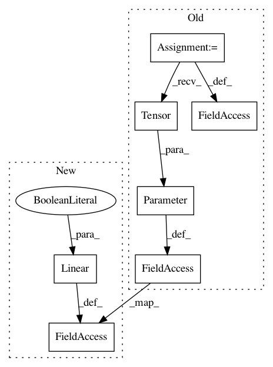

3136b84e522b4a2dfaf71810ebbecf03bf24066c,torch_geometric/nn/conv/graph_conv.py,GraphConv,__init__,#GraphConv#Any#Any#Any#Any#,31
Before Change
self.in_channels = in_channels
self.out_channels = out_channels
self.weight = Parameter(torch.Tensor(in_channels, out_channels))
self.lin = torch.nn.Linear(in_channels, out_channels, bias=bias)
self.reset_parameters()
After Change
self.in_channels = in_channels
self.out_channels = out_channels
self.lin_rel = Linear(in_channels, out_channels, bias=False)
self.lin_root = Linear(in_channels, out_channels, bias=bias)
self.reset_parameters()
In pattern: SUPERPATTERN
Frequency: 4
Non-data size: 7
Instances
Project Name: rusty1s/pytorch_geometric
Commit Name: 3136b84e522b4a2dfaf71810ebbecf03bf24066c
Time: 2020-06-08
Author: matthias.fey@tu-dortmund.de
File Name: torch_geometric/nn/conv/graph_conv.py
Class Name: GraphConv
Method Name: __init__
Project Name: rusty1s/pytorch_geometric
Commit Name: 9a2b482b3a0eb2ce58e430c9968b8e471227e775
Time: 2020-06-09
Author: matthias.fey@tu-dortmund.de
File Name: torch_geometric/nn/dense/dense_graph_conv.py
Class Name: DenseGraphConv
Method Name: __init__
Project Name: rusty1s/pytorch_geometric
Commit Name: 1210a05912b97ca9b9d87a27aae34821242b7196
Time: 2020-05-31
Author: matthias.fey@tu-dortmund.de
File Name: torch_geometric/nn/dense/dense_sage_conv.py
Class Name: DenseSAGEConv
Method Name: __init__
Project Name: rusty1s/pytorch_geometric
Commit Name: 16c6e0a18c6684b8faface5bc24344f0aafdcdea
Time: 2020-05-22
Author: matthias.fey@tu-dortmund.de
File Name: torch_geometric/nn/dense/dense_sage_conv.py
Class Name: DenseSAGEConv
Method Name: __init__